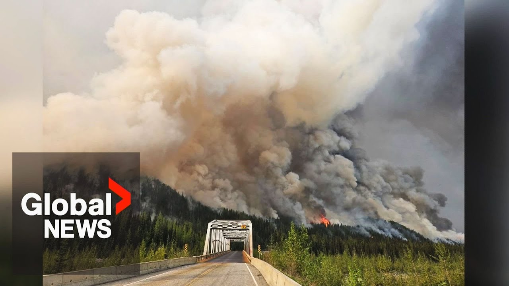

【"危险情况"：BC省与阿尔伯塔省交界处爆发猛烈野火】
Summary: There is a wildfire near Goa Lake, fueled by strong winds, warm temperatures, and low humidity, threatening Kelly Lake. Firefighters are using helicopters to combat the flames, which have grown to 110 square kilometers, displacing residents. While no structures are damaged yet, shifting winds may increase danger. More evacuation alerts are issued along the Alaska Highway, with officials warning of volatile conditions. Fire risk is highest tonight, with challenging conditions expected tomorrow. The fire threat is shifting south as temperatures rise, drying forests and increasing fire danger ratings. Health concerns also arise from the early heat wave, with officials urging caution against dehydration. 177 BC Wildfire Service personnel are fighting fires elsewhere but may return if needed.
摘要： Goa湖附近爆发野火，强风、高温和低湿度加剧火势，威胁Kelly Lake社区。消防员动用直升机灭火，火势已蔓延至110平方公里，迫使居民撤离。目前建筑未受损，但风向转变可能增加危险。阿拉斯加公路沿线发布更多疏散警报，官员警告情况极不稳定。今晚火灾风险最高，明日仍具挑战。随着气温上升，火灾威胁南移，森林干燥导致火险等级升高。早期热浪还引发健康担忧，官员提醒警惕脱水。177名BC野火服务人员在外省灭火，必要时可召回。

⏱️ Estimated Reading Time: 3 min
📚 六级生词 📚 雅思生词 📚 托福生词 📚 GRE生词 📚 视频里的生词
There is a fire.
这里发生了火灾。
This is up by Goa Lake.
火灾发生在Goa湖附近。
Howling winds, warm temperatures, and low humidity pushing the flames on top of the community of Kelly Lake.
呼啸的狂风、高温和低湿度将火焰推向Kelly Lake社区。
Starting to bomb the fire.
开始用直升机投掷水弹灭火。
Choppers bucketing in people's backyards.
直升机在居民的后院进行水桶作业。
The Kiss Catna fire has grown to roughly 110 square kilometers, forcing dozens of people from their homes along the BC Alberta border.
Kiss Catna火灾已扩大至约110平方公里，迫使BC省与阿尔伯塔省交界处的数十人撤离家园。
So far, none of the structures in Kelly Lake have been damaged, but a shift in the wind expected Friday could put the community in further danger.
目前Kelly Lake的建筑尚未受损，但预计周五的风向转变可能使社区面临更大危险。
Other fires along the Alaska Highway have prompted more evacuation alerts.
阿拉斯加公路沿线的其他火灾引发了更多疏散警报。
Officials say the situation remains highly volatile.
官员表示情况仍极不稳定。
Tonight is going to be the riskiest by far in terms of fire behavior.
就火灾行为而言，今晚将是迄今为止最危险的时刻。
Uh tomorrow, again, quite challenging conditions anticipated, but not nearly what we saw today or will see this afternoon.
呃，明天预计仍具挑战性，但远不及今天或今天下午的情况。
While the primary focus of firefighters is right now in the north, that danger is shifting south.
尽管消防员目前主要关注北部，但火灾威胁正在南移。
Temperatures climbing across BC.
BC省气温持续攀升。
Through the weekend, most places around the southern interior will see temperatures well above 30°.
整个周末，南部内陆大部分地区气温将远高于30°。
Forests rapidly drying out.
森林正迅速干燥。
It has been pretty moderate up until this point, but we are seeing the fire danger rating increase from moderate to high, and some areas will reach extreme danger rating over the weekend.
此前火险等级一直较为温和，但现在正从中级升至高级，部分区域周末将达到极端危险等级。
The concerns from this early season heat wave also extend to health.
这场早季热浪还引发健康担忧。
While the temperatures are not extreme, it is much warmer much earlier than usual.
尽管气温不算极端，但比往年同期更早更热。
Officials reminding people, especially seniors, that dehydration can happen quickly and quietly when when heat builds up over the course of a day.
官员提醒民众，尤其是老年人，当热量在一天中累积时，脱水可能快速且悄无声息地发生。
Uh if you're spending time indoors and if you're in a space you don't have access to cool space, it can it can certainly sneak up on you.
呃，如果你待在室内且无法接触凉爽空间，脱水确实可能悄然而至。
177 BC Wildfire Service personnel are fighting fires elsewhere in Canada.
177名BC野火服务人员正在加拿大其他地区灭火。
Those crews expected to be back in BC mid June.
这些人员预计六月中旬返回BC省。
They can be recalled more quickly if the need arises.
如有需要，可更快召回他们。
Aaron MacArthur, Global News.
Aaron MacArthur，环球新闻。